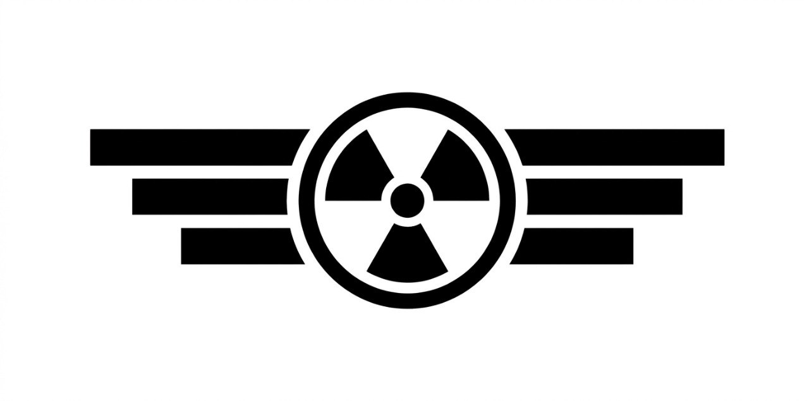

Главная
Фотогалерея
Видео галерея
Вступить в отряд
Сайт отряда MetallBirds

Эмблема отряда MetallBirds
Места, которые мы планируем посетить
Заброшенный Брянский военный завод
Посёлок Дальний Клин
Заброшенная школа
Военный городок воинской части № 52096
Дол Лесные Голоса